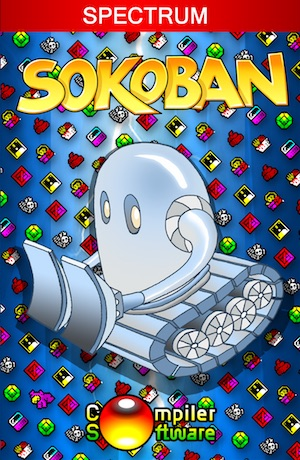
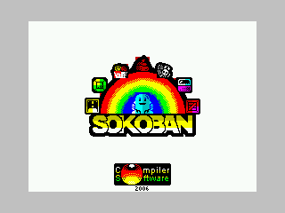
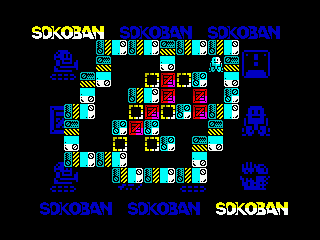
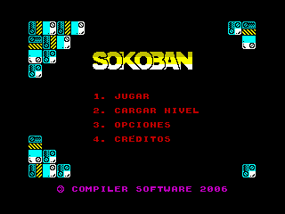
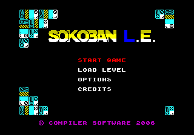
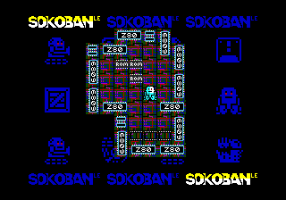
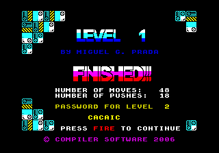

El proyecto ZeXus-6 había sido un completo desastre. La Corporación no se podía permitir otro fracaso si quería mantener su posición dominante en el mercado. Los ingenieros optaron por abandonar sus diseños en genética y volcaron todos sus esfuerzos en la robótica, una ciencia, que, aunque menos sofisticada, tendría mejor aceptación por los clientes finales tras el fiasco de los explicantes.
La nueva serie de robots JCN-7000 permitiría liberar a los humanos de trabajos altamente peligrosos: manejo de instalaciones energéticas, carga y descarga en almacenes, limpieza de cementerios, desinfección de quirófanos, recogida de excrementos en los parques, etc.
El éxito comercial de estas máquinas, sin personalidad ni dilemas morales, borrarían de la memoria colectiva los acontecimientos que habían manchado el nombre de la Corporación. Tecnología del pasado al servicio del hombre, para crear un futuro brillante. ¿O quizás no?...
Sokoban es un juego de lógica. Tu misión es resolver los 99 niveles controlando al robot JCN-7000. Este se encargará de empujar los objetos a los puntos de destino indicados en pantalla. Hay que tener cuidado, porque un movimiento equivocado puede bloquearnos el paso o dejar atascado uno de los objetos, lo que implicará tener que reiniciar el nivel. Por ello, es importante tener en cuenta estas dos reglas:
Cada vez que pases de nivel, el juego te facilitará una clave de acceso para poder continuar desde ese punto si tienes que abandonar la partida.
Dispones de 7 escenarios diferentes para desempeñar tu labor: screws, oh shit!, graveyard, surgeon, the tower, futurist y spectrum.



En 2015, Adrian Smethurst (cmonkey) ha desarrollado un port de Sokoban para placas arcade Taito L System.
El juego no es un simple port, sino que incluye algunas mejoras:



{kind=link}
{kind=link}
{kind=link}
Dinos qué te parece